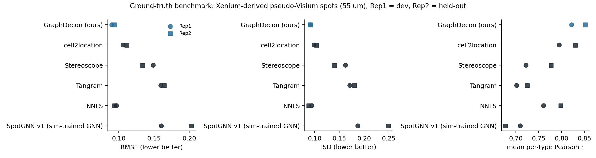
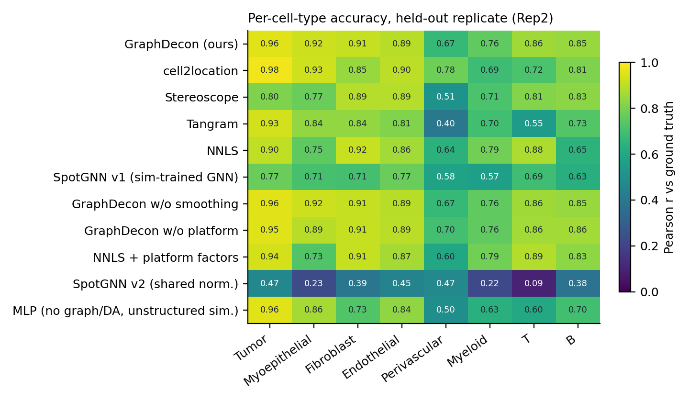
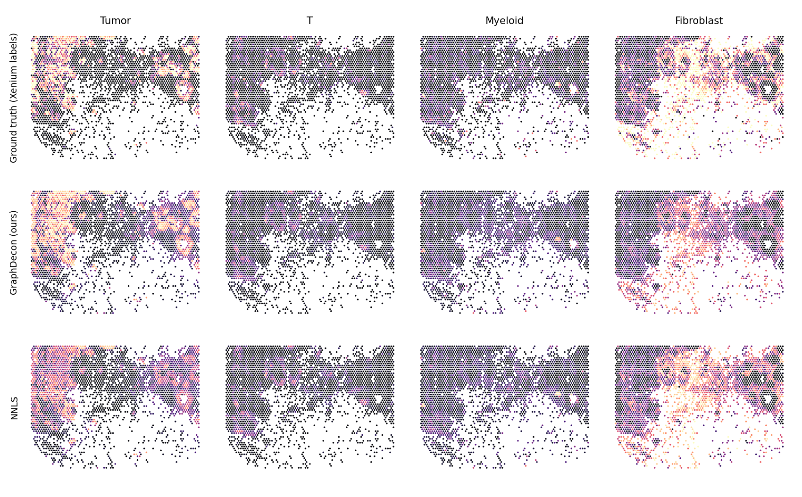
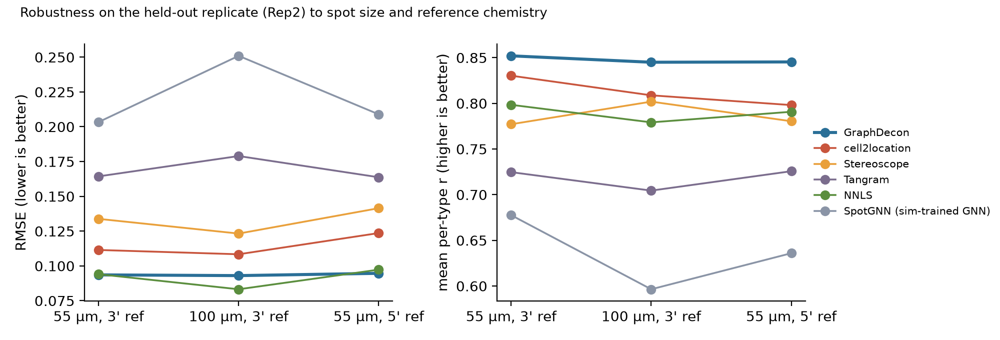
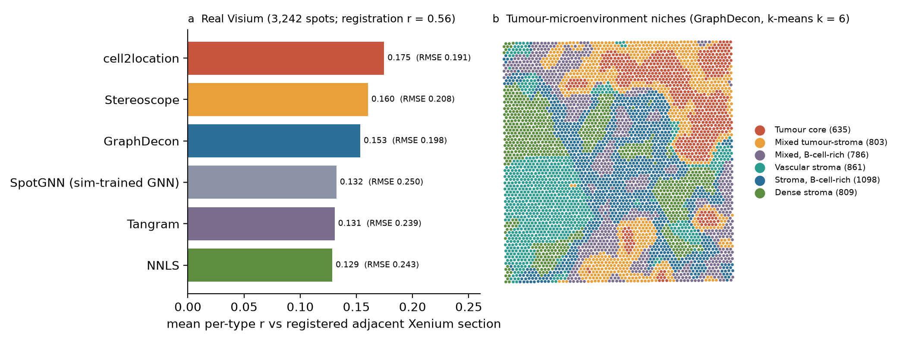

Headline
r = 0.852GraphDecon mean per-type correlation on held-out spots, highest of all methods (0.854 without its platform factors)
+0.022over cell2location (95% CI 0.014–0.030); +0.053 over NNLS
0.678our pre-specified simulation-trained graph neural network: below NNLS
λ = 0spatial smoothing was not chosen on development data
r ≤ 0.18agreement of every method with the registered section on real Visium
Xenium cells + labels→55 µm pseudo-spots, known composition→10 methods→held-out replicate→real Visium check
Negative and mixed results, reported in full:
- SpotGNN, specified in advance, did not transfer from simulated to real spots. Its graph layers and domain adaptation did not help, and a post hoc revision was worse.
- Spatial smoothing (λ chosen on replicate 1 = 0) and per-gene platform factors (large, but removing them changes accuracy by < 0.003) added nothing. GraphDecon's gain comes from the count likelihood.
- On real Visium, all methods agree only weakly with the adjacent section and cell2location and Stereoscope rank above GraphDecon.
Held-out benchmark (Xenium replicate 2, 55 µm, 2,715 spots)
| Method | RMSE | Mean per-type r | Δr vs GraphDecon (block bootstrap 95% CI) |
|---|---|---|---|
| GraphDecon: Poisson likelihood (λ = 0 chosen on Rep1) | 0.094 | 0.852 | — |
| cell2location | 0.111 | 0.830 | +0.022 (0.014–0.030) |
| NNLS + platform factors | 0.090 | 0.819 | +0.033 (0.025–0.042) |
| NNLS | 0.094 | 0.798 | +0.053 (0.043–0.065) |
| Stereoscope | 0.134 | 0.777 | +0.074 (0.060–0.088) |
| MLP on unstructured simulations | 0.158 | 0.727 | +0.124 (0.114–0.134) |
| Tangram | 0.164 | 0.725 | +0.127 (0.116–0.137) |
| SpotGNN: simulation-trained GNN + domain adaptation (pre-specified) | 0.203 | 0.678 | +0.174 (0.158–0.190) |
| SpotGNN v2 (post hoc) | 0.259 | 0.338 | +0.517 (0.487–0.550) |
Figures





Research prototype: not a medical device and not for clinical decisions. Data: Janesick et al., Nat Commun 2023 (GEO GSE243280). © 2026 Husain Naqvi. All Rights Reserved.